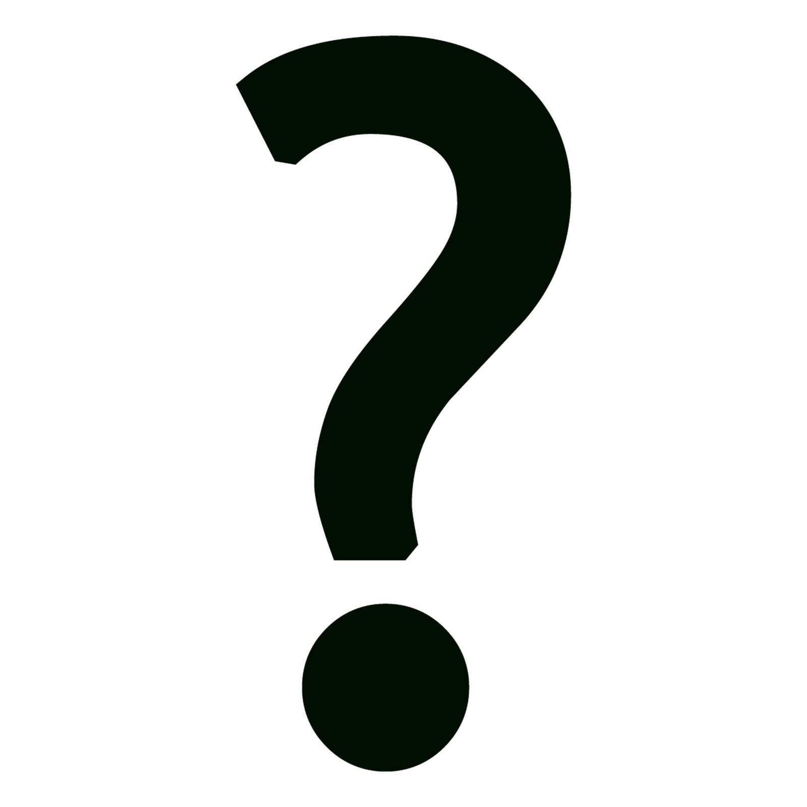
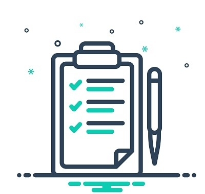

01
Concepto

Conoce qué es el diseño visual web y para qué sirve.
Averígualo →PROGRAMACIÓN WEB: DISEÑO Y COMUNICACIÓN DIGITAL
Elementos para construir un sitio claro, atractivo y fácil de utilizar.
CONOCER EL TEMAAquí encontrarás información útil para comprender qué es el diseño visual web y cómo aplicarlo en la creación de sitios atractivos, ordenados, funcionales y fáciles de navegar.
A lo largo de este sitio conocerás su definición, utilidad y estructura, considerando aspectos fundamentales como el orden, la estética, la identidad visual, la usabilidad, la disposición de los contenidos y la accesibilidad.
Además, encontrarás fuentes bibliográficas para ampliar tus conocimientos y un ejemplo de storytelling que te ayudará a comprender de manera práctica cómo se aplican estos elementos dentro de un sitio web.

Conoce qué es el diseño visual web y para qué sirve.
Averígualo →
Descubre los componentes que ayudan a crear sitios claros y funcionales.
Explóralos→Consulta fuentes y recursos para profundizar en el tema.
Ver →Compara una habitación desordenada con una organizada y descubre su relación con una página web.
Ver ejemplo →Un sitio web no solo debe verse bien. También necesita organizar la información, facilitar la navegación y ofrecer una experiencia agradable. Cuando los elementos visuales trabajan en conjunto, las personas pueden encontrar lo que buscan con mayor facilidad.